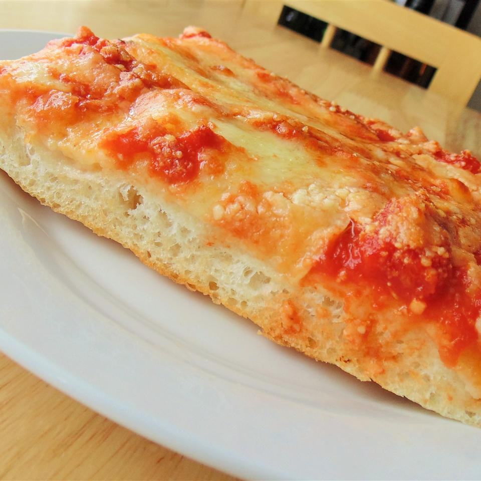

Home
Steak & Eggs Recipe

Description
I love the tangy tenderization that the buttermilk provides. After the buttermilk soak,
dredge the chicken pieces in seasoned flour, and fry them in hot oil until crisp and cooked.
Ingredients
Steps
- Combine water and yeast in a small bowl. Let stand until yeast softens and begins to form a creamy foam, about 5 minutes.
- Combine flour and salt together in the bowl of a stand mixer fitted with a dough hook attachment. Pour in yeast mixture. Knead dough until smooth, about 7 minutes.
- Grease a large bowl lightly with olive oil. Form dough into a tight ball and lightly grease the top. Place in the bowl; cover loosely with plastic wrap. Let rise until doubled in volume, about 30 minutes.